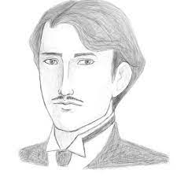

Kabanata 4: Erehe at Pilibustero
Sa paglalakad ni Crisostomo, napansin niyang halos walang pagbabago sa Maynila sa loob ng kaniyang pitong taong pamamalagi niya sa Europa. Habang pinagninilayan niya ito, lumapit si Tenyente Guevarra. Pinaalalahanan siya nito na mag-ingat. Mula sa inilahad ng matandang tenyente, nalaman ni Crisostomo ang naging sanhi ng pagkamatay ng kaniyang ama. Ayon sa tenyente, ipinagtanggol ni Don Rafael ang isang bata sa pananakit ng kastilang tagasingil ng buwis. Akmang tatadyakan ng Kastila ang bata ngunit tinabig ito ng ama ni Crisostomo na naging dahilan ng pagkabuwal ng tagapaningil. Tumama ang ulo nito sa isang bato na naging dahilan ng kaniyang kamatayan. Dahil sa pangyayaring ito nabilanggo si Don Rafael. Sinamantala ito ng mga naiinggit at may galit sa ama ni Crisostomo at isa na rito si Padre Damaso. Pinaratangan ng pari na erehe si Don Rafael dahil sa hindi ito nangungumpisal.
Ipinahayag ng tenyente ang kaniyang pagsisikap upang mapalaya ang ama ng binata ngunit naging mahirap ito. Sa kabila ng mga pagsubok, hindi sumuko si Tenyente Guevarra sa pagtatanggol at pagmamalasakit kay Don Rafael, ngunit nang malapit nang makalaya ang huli, siya naman nitong pagkamatay sa bilangguan. Sa puntong iyon, nagpaalam ang tenyente at pumara ng nagdaraang karwahe.
Don Rafael Ibarra
Ama ni Crisostomo at itinuturing na pinakamayaman sa San Diego ngunit hindi mahilig sa kapangyarihan. Iginagalang at takbuhan siya ng mga taong nagigipit.
Repleksyon
Huwag samantalahin at ibintang basta basta sa isang tao ang kaniyang nagawa, alamin muna kung totoo niya itong nagawa at siguro mayroong dahilan kung bakit niya ito nagawa, at ang pagbibintang sa kapwa niyo ay maaaring ikapahamak at ikasira ng buhay ng taong pinagbintangan niyo, kundi tulungan ninyo na lang ang taong iyon kahit naiinggit o galit kayo sa taong iyon.